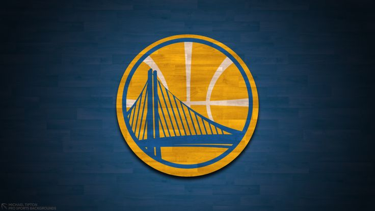

LAKERS

Los Angeles Lakers, NBA tarihinin en başarılı ve ikonik takımlarından biridir. 1947'de Minneapolis Lakers adıyla kurulan takım, başlangıçta Minnesota'da bulunuyordu. Adını bölgedeki "10,000 Göller Ülkesi"nden aldı ve NBA tarihinin ilk hanedanlıklarından biri oldu. İlk şampiyonluklarını 1948-49 sezonunda, hala BAA olarak bilinen ligde kazandılar. 1960 yılında Los Angeles'a taşınarak bugünkü adlarını aldılar. Lakers, Los Angeles'a taşındıktan sonra NBA'deki başarılarını artırarak ligin en büyük markalarından biri haline geldi. Takımın tarihi boyunca 17 şampiyonluk kazandı ve Boston Celtics ile birlikte NBA'deki en fazla şampiyonluk kazanan takım olarak yerini aldı. Los Angeles Lakers, toplamda 30 kez NBA Finalleri'ne kalarak bu alanda bir rekora sahiptir ve 30 Hall of Fame oyuncusuyla basketbol tarihinin en büyük takımlarından biri olarak kabuledilir. İşte Los Angeles Lakers tarihinin en iyi 10 oyuncusu:
Golden State Warriors
1946'daki kuruluşlarından bu yana Golden State Warriors , özellikle son on yılda en başarılı NBA takımlarından biri haline geldi. 1946'da Philadelphia'da kuruldular ve NBA'in ilk şampiyonluğunu 1946-47'de, hala BAA olarak bilindiği dönemde kazandılar. Warriors, 1962'de San Francisco'ya taşınarak San Francisco Warriors adını almadan önce Philadelphia'da başladı. 1971'de isimlerini tekrar Golden State Warriors olarak değiştirdiler. 1946'daki kuruluşlarından bu yana, franchise, 2014-15'ten bu yana dördü de dahil olmak üzere yedi şampiyonluk kazandı. Golden State, 19 Hall of Fame oyuncusu da dahil olmak üzere tarihi takımları için oynayan birçok efsanevi oyuncuya sahip oldu. Bu listede yer almayan oyunculardan bazıları Tim Hardaway, Baron Davis ve Andre Iguodala'dır . İşte Golden State Warriors tarihinin en iyi 10 oyuncusu.
Chicago Bulls

Chicago Bulls, NBA’in en ünlü ve efsanevi takımlarından biri olarak tanınır. 1966 yılında Chicago, Illinois'ta kurulan takım, özellikle 1990'larda kazandığı başarılarla basketbol dünyasında ölümsüz bir yere sahip olmuştur. Bulls, ilk şampiyonluklarını 1990-91 sezonunda kazandı ve 1990'ların tamamında NBA’i domine etti. Michael Jordan, Scottie Pippen ve koç Phil Jackson önderliğinde Bulls, altı şampiyonluk kazandı. Bu başarılar sırasında takım, iki kez üç şampiyonluk serisi (1991-1993 ve 1996-1998) yaparak NBA tarihindeki en büyük hanedanlıklardan biri haline geldi. Chicago Bulls’un başarısı, özellikle Michael Jordan'ın liderliğinde, dünya çapında basketbolun popülaritesini artırdı. Jordan’ın yanında Pippen, Dennis Rodman ve Steve Kerr gibi yıldız oyuncular yer aldı. Ayrıca takım, 1995-96 sezonunda 72 galibiyetle NBA tarihinin en iyi normal sezon rekorunu kırdı; bu rekor 2015-16 sezonunda Golden State Warriors tarafından geçildi. Chicago Bulls, toplamda altı şampiyonluk kazanmış ve NBA tarihinde unutulmaz bir yere sahip olmuştur. Takımın efsaneleri, sadece sahadaki başarılarıyla değil, aynı zamanda küresel basketbol kültürüne yaptıkları katkılarla da tanınır. İşte Chicago Bulls tarihinin en iyi 10 oyuncusu:
Boston Celtics

Boston Celtics, NBA tarihinin en başarılı ve köklü takımlarından biri olarak tanınır. 1946 yılında Boston, Massachusetts'te kurulan takım, NBA’in en fazla şampiyonluk kazanan takımları arasında yer alır. Celtics, özellikle 1950'ler ve 1960'larda Bill Russell liderliğinde ligdeki en dominant dönemlerinden birini yaşamıştır. Takım, ilk şampiyonluğunu 1957'de kazandı ve 1959 ile 1966 yılları arasında üst üste 8 şampiyonluk kazanarak NBA tarihinin kırılması zor bir rekoruna imza attı. Bill Russell, Bob Cousy ve koç Red Auerbach liderliğindeki bu dönem, Celtics’in NBA’deki efsane statüsünün temelini oluşturdu. 1980'ler, Celtics için bir diğer altın dönemdi. Larry Bird, Kevin McHale ve Robert Parish gibi yıldızların liderliğindeki takım, Magic Johnson liderliğindeki Los Angeles Lakers ile rekabet ederek NBA tarihindeki en unutulmaz dönemlerden birini yarattı. Bu dönemde Celtics, 1981, 1984 ve 1986 yıllarında şampiyonluk kazandı. 2008 yılında, Paul Pierce, Kevin Garnett ve Ray Allen’ın oluşturduğu “Büyük Üçlü” sayesinde Celtics bir kez daha NBA şampiyonu oldu. Bu başarı, Celtics’in toplam şampiyonluk sayısını 17’ye çıkararak, Los Angeles Lakers ile şampiyonluk yarışında başa baş olmalarını sağladı. Boston Celtics, 17 NBA şampiyonluğu ile NBA tarihindeki en başarılı takımlardan biri olmayı sürdürmektedir. Takım, sayısız Hall of Fame oyuncusu ve unutulmaz başarılarıyla basketbol dünyasında eşsiz bir yere sahiptir. İşte Boston Celtics tarihinin en iyi 10 oyuncusu:
San Antonio Spurs

San Antonio Spurs, NBA’in en istikrarlı ve başarılı takımlarından biri olarak tanınır. Takım, 1967 yılında Dallas Chaparrals adıyla ABA (American Basketball Association) liginde kuruldu. 1973'te San Antonio’ya taşınarak adını San Antonio Spurs olarak değiştirdi ve 1976'da NBA'e katıldı. Spurs, ilk büyük başarılarını 1990'ların sonunda ve 2000'lerin başında yakaladı. 1997 yılında draft ettikleri Tim Duncan, takımın kaderini değiştirdi. Duncan, David Robinson ile birlikte “İkiz Kuleler” dönemini başlatarak 1999 yılında Spurs’un ilk NBA şampiyonluğunu kazandırdı. Spurs, Gregg Popovich'in koçluğunda modern NBA tarihinin en başarılı hanedanlıklarından birine sahip oldu. Takım, 1999, 2003, 2005, 2007 ve 2014 yıllarında toplam beş NBA şampiyonluğu kazandı. Tim Duncan, Tony Parker ve Manu Ginobili’nin oluşturduğu üçlü, Spurs’un oyun tarzını ve takım kültürünü tanımlayan temel oyuncular oldu. 2014 yılında, takım bir kez daha şampiyonluk kazanırken, Spurs’un top paylaşımına dayalı oyun stili ve disiplinli yapısı NBA'e örnek teşkil etti. O sezon NBA Finalleri MVP'si Kawhi Leonard oldu. San Antonio Spurs, toplam 22 sezon boyunca üst üste playoff’lara kalarak ligdeki en istikrarlı takımlardan biri olduğunu kanıtladı. Spurs, sadece şampiyonluklarıyla değil, aynı zamanda oyuncu geliştirme ve takım kültürüyle de NBA tarihine damga vurmuştur. İşte San Antonio Spurs tarihinin en iyi 10 oyuncusu: